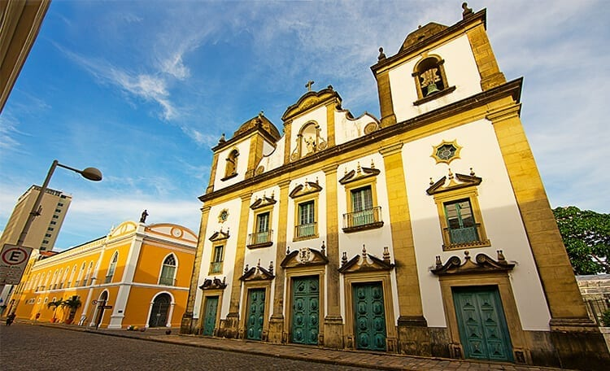

O Igreja Madre de Deus Não tem como andar pelas Ruas do recife Antigo e não reparar na Igreja Madre de Deus. Construída em 1709, a Igreja é uma das mais bonitas e concorridas para casamentos em Recife. Se você tiver a sorte de passar por ela aberta, vale a pena a visita. É lindona!
Vitral original de Suassuna
No Shopping Paço Alfângeda você consegue ver mosaicos originais de Ariano Suassuna. O atual shopping fica localizado às margens do Rio Capibaribe e, ao longo da história, ele já foi o principal porto do Recife, um Convento dos padres da Ordem de São Felipe Néri, a sede da Alfândega, sendo utilizado, mais recentemente, como cooperativa, armazém de produtos e estacionamento. Hoje o Paço Alfândega representa um patrimônio histórico e um marco da revitalização do Bairro de Recife Antigo. Vale muito a pena uma visita!